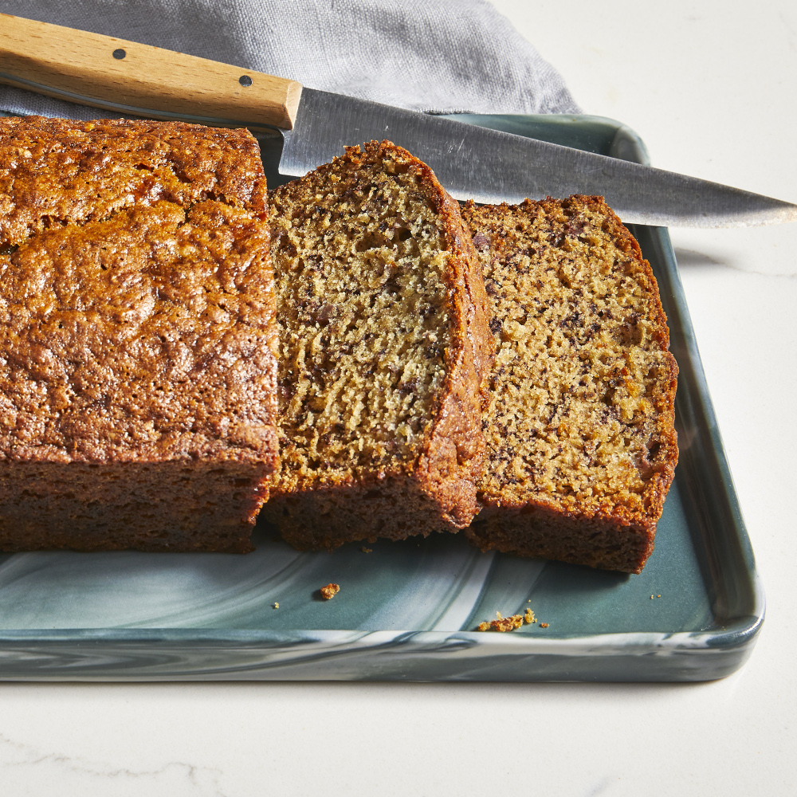

Easy Banana Bread

A great use for your ripened bananas
Banana bread that will make you come back for seconds
Ingredients
- 3 ripe bananas, mashed
- 1 cup white sugar
- 1 egg
- 1/4 cup melted butter
- 1.5 cups all-purpose flour
- 1 teaspoon baking soda
- 1 teaspoon salt
Directions
- Preheat oven to 325 degrees F (165 degrees C).
- Grease a 9x5-inch loaf pan.
- Combine bananas, sugar, egg, and butter together in a bowl.
- Mix flour and baking soda together in a separate bowl
- stir into banana mixture until batter is just mixed.
Stir salt into batter. Pour batter into the prepared loaf pan.
- Bake in the preheated oven until a toothpick inserted in the center of the bread
comes out clean, about 1 hour.
Home Page